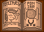

Hi, I'm Christian Silvermoon.
I'm an amateur programmer, brony, and Linux enthusiast.
Thanks for taking the time to check out this page!
I mess with a variety of projects, not all of which I finish... not all of which are that well
thought out or even really... well, good. The projects that really shine, though, the ones
I'm most confident in? You can find those right from here!
You can think of this page as my "Featured Projects" Page.
Check out the links in the sidebar on the left for details.
Poniary is a tool I created to make the managing of Original Character Details easier to do.
I tend to come up with a lot of ideas, and that's led to me creating over
50 Unique Characters!
Seeing as I have... well, not the best memory, keeping the details of characters I use less frequently
consistant can be difficult, so to combat this problem, I created
Poniary.
It's also good for keeping detailed references you can share with friends!
Just share your
Save File with them and direct them to Poniary!
Fun Fact: Poniary is a Portmanteau of
Pony and
Bestiary.
Click This

To Get Started